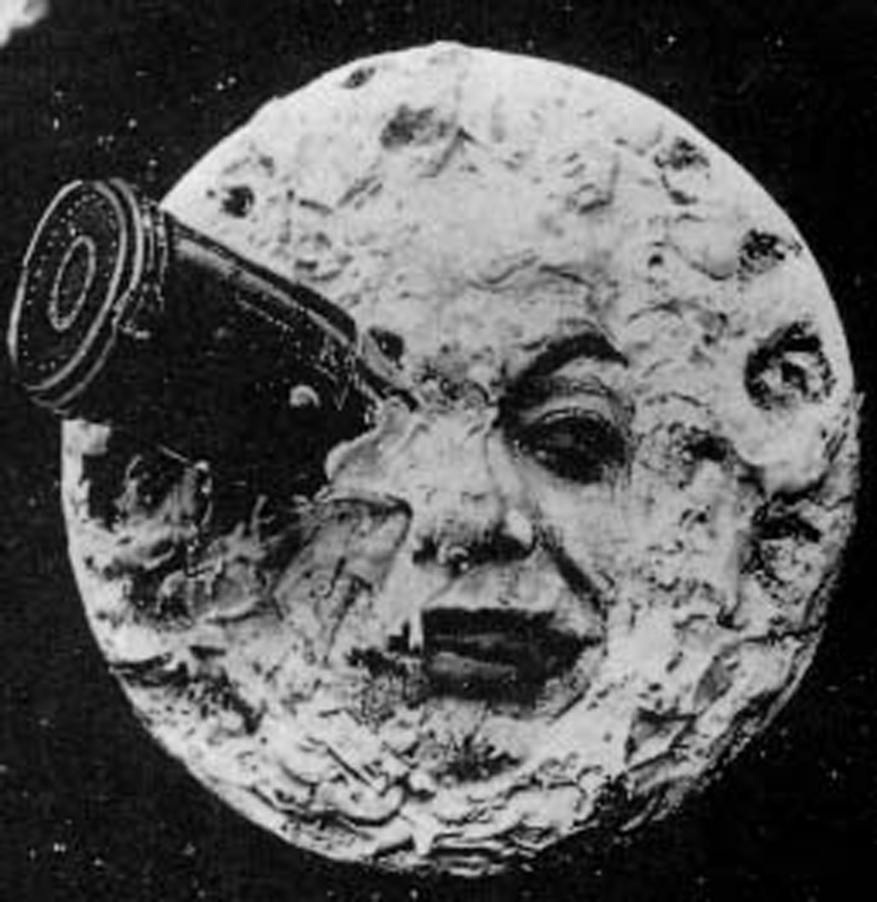
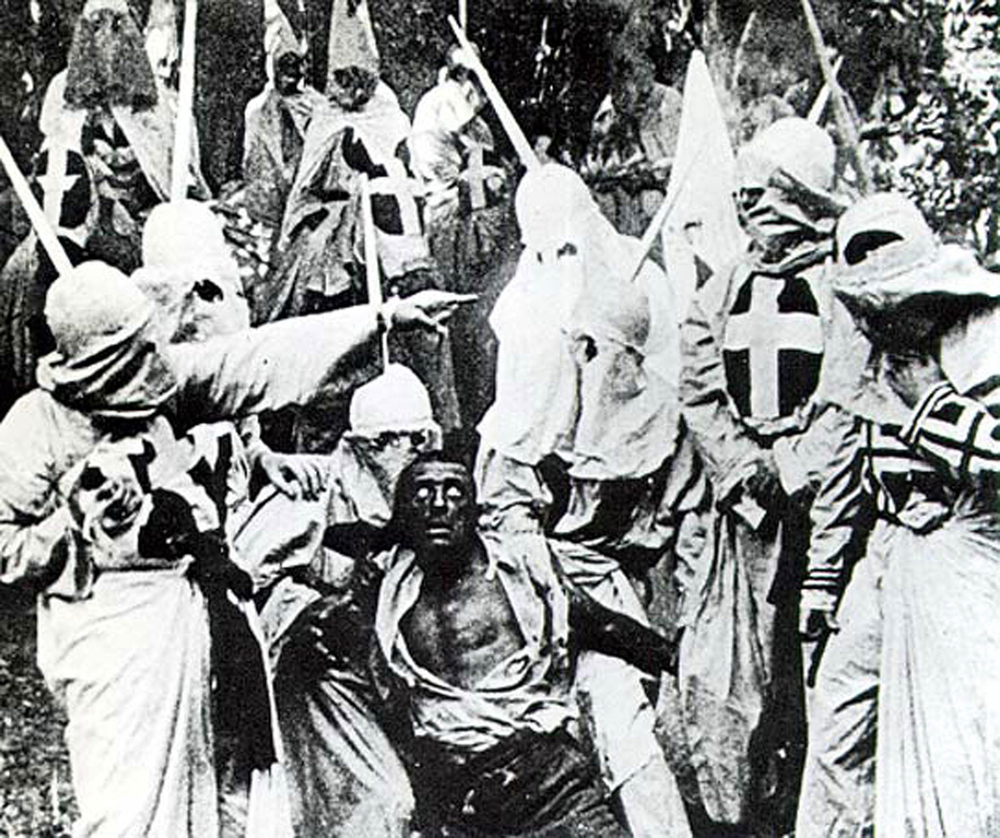

Figure 8.1

In 2009, many moviegoers were amazed by the three-dimensional (3-D) film Avatar. Avatar grossed over $1.8 billion in theaters worldwide, $1.35 billion from 3-D sales alone.Brandon Gray, “‘Avatar’ is New King of the World,” Box Office Mojo, January 26, 2010, http://boxofficemojo.com/news/?id=2657. Following in that vein, dozens of other movie studios released 3-D films, resulting in lesser box office successes such as Alice in Wonderland, Clash of the Titans, and Shrek Forever After. Many film reviewers and audiences seemed adamant—3-D movies were the wave of the future.
However, could this eye-popping technology actually ruin our moviegoing experience? Brian Moylan, a critic for Gawker.com, argues that it already has. The problem with 3-D, he says, is that “It is so mind-numbingly amazing that narrative storytelling hasn’t caught up with the technology. The corporate screenwriting borgs are so busy trying to come up with plot devices to highlight all the newfangled whoosiwhatsits—objects being hurled at the audience, flying sequences, falling leaves, glowing Venus Flytraps—that no one is really bothering to tell a tale.”Brian Moylan, “3D is Going to Ruin Movies for a Long Time to Come,” Gawker, http://gawker.com/#!5484085/3d-is-going-to-ruin-movies-for-a-long-time-to-come.
James Cameron, director of Avatar, agrees. “[Studios] think, ‘what was [sic] the takeaway lessons from Avatar? Oh you should make more money with 3-D.’ They ignore the fact that we natively authored the film in 3-D, and [they] decide that what we accomplished in several years of production could be done in an eight week (post-production 3-D) conversion [such as] with Clash of the Titans.”Edward Baig, “‘Avatar’ Director James Cameron: 3D Promising, but Caution Needed,” USA Today, March 11, 2010, http://content.usatoday.com/communities/technologylive/post/2010/03/james-cameron/1. Cameron makes the following point: While recent films such as Avatar (2009) and Beowulf (2007) were created exclusively for 3-D, many other filmmakers have converted their movies to 3-D after filming was already complete. Clash of the Titans is widely criticized because its 3-D effects were quickly added in postproduction. Edward Baig, “‘Avatar’ Director James Cameron: 3D Promising, but Caution Needed,” USA Today, March 11, 2010, http://content.usatoday.com/communities/technologylive/post/2010/03/james-cameron/1.
What effect does this have on audiences? Aside from the complaints of headaches and nausea (and the fact that some who wear glasses regularly can find it uncomfortable or even impossible to wear 3-D glasses on top of their own), many say that the new technology simply makes movies looks worse. The film critic Roger Ebert has continuously denounced the technology, noting that movies such as The Last Airbender look like they’re “filmed with a dirty sheet over the lens.”Roger Ebert, review of The Last Airbender, directed by M. Night Shyamalan, Chicago Sun Times, June 30, 2010, http://rogerebert.suntimes.com/apps/pbcs.dll/article?AID=/20100630/REVIEWS/100639999. 3-D technology can cause a movie to look fuzzier, darker, and generally less cinematically attractive. However, movie studios are finding 3-D films attractive for another reason.
Because seeing a movie in 3-D is considered a “premium” experience, consumers are expected to pay higher prices. And with the increasing popularity of IMAX 3D films, many moviegoers were amazed by the 3-D film Avatar 3-D, tickets may surpass $20 per person.Andrew Stewart and Pamela McClintock, “Big Ticket Price Increase for 3D Pics,” Variety, March 24, 2010, http://www.variety.com/article/VR1118016878.html?categoryid=13&cs=1. This gives 3-D films an advantage over 2-D ones as audiences are willing to pay more to do so.
The recent 3-D boom has often been compared to the rise of color film in the early 1950s. However, some maintain that it’s just a fad. Will 3-D technology affect the future of filmmaking? With a host of new 3-D technologies for the home theater being released in 2010, many are banking on the fact that it will. Director James Cameron, however, is unsure of the technology’s continuing popularity, arguing that “If people put bad 3-D in the marketplace they’re going to hold back or even threaten the emerging of 3-D.”Edward Baig, “‘Avatar’ Director James Cameron: 3D Promising, but Caution Needed,” USA Today, March 11, 2010, http://content.usatoday.com/communities/technologylive/post/2010/03/james-cameron/1. What is important, he maintains, is the creative aspect of moviemaking—no technology can replace good filmmaking. In the end, audiences will determine the medium’s popularity. Throughout the history of film, Technicolor dyes, enhanced sound systems, and computer-generated graphics have boasted huge box-office revenues; however, it’s ultimately the viewers who determine what a good movie is and who set the standard for future films.
The movie industry as we know it today originated in the early 19th century through a series of technological developments: the creation of photography, the discovery of the illusion of motion by combining individual still images, and the study of human and animal locomotion. The history presented here begins at the culmination of these technological developments, where the idea of the motion picture as an entertainment industry first emerged. Since then, the industry has seen extraordinary transformations, some driven by the artistic visions of individual participants, some by commercial necessity, and still others by accident. The history of the cinema is complex, and for every important innovator and movement listed here, others have been left out. Nonetheless, after reading this section you will understand the broad arc of the development of a medium that has captured the imaginations of audiences worldwide for over a century.
While the experience of watching movies on smartphones may seem like a drastic departure from the communal nature of film viewing as we think of it today, in some ways the small-format, single-viewer display is a return to film’s early roots. In 1891, the inventor Thomas Edison, together with William Dickson, a young laboratory assistant, came out with what they called the kinetoscopeThe camera used to capture images for the Edison kinetograph., a device that would become the predecessor to the motion picture projector. The kinetoscope was a cabinet with a window through which individual viewers could experience the illusion of a moving image.Europe 1789–1914: Encyclopedia of the Age of Industry and Empire, vol. 1, s.v. “Cinema,” by Alan Williams, Gale Virtual Reference Library.“The Kinetoscope,” British Movie Classics, http://www.britishmovieclassics.com/thekinetoscope.php. A perforated celluloid film stripA thin, transparent type of film that was coated with light-sensitive chemicals to record images. with a sequence of images on it was rapidly spooled between a lightbulb and a lens, creating the illusion of motion.Britannica Online, s.v. “Kinetoscope,” http://www.britannica.com/EBchecked/topic/318211/Kinetoscope/318211main/Article. The images viewers could see in the kinetoscope captured events and performances that had been staged at Edison’s film studio in East Orange, New Jersey, especially for the Edison kinetographThomas Edison’s early motion picture display that allowed a single viewer to experience the illusion of a moving image. (the camera that produced kinetoscope film sequences): circus performances, dancing women, cockfights, boxing matches, and even a tooth extraction by a dentist.David Robinson, From Peep Show to Palace: The Birth of American Film (New York: Columbia University Press, 1994), 43–44.
Figure 8.2

The Edison kinetoscope.
As the kinetoscope gained popularity, the Edison Company began installing machines in hotel lobbies, amusement parks, and penny arcades, and soon kinetoscope parlors—where customers could pay around 25 cents for admission to a bank of machines—had opened around the country. However, when friends and collaborators suggested that Edison find a way to project his kinetoscope images for audience viewing, he apparently refused, claiming that such an invention would be a less profitable venture.Britannica Online. s.v. “History of the Motion Picture.” http://www.britannica.com/EBchecked/topic/394161/history-of-the-motion picture; Robinson, From Peep Show to Palace, 45, 53.
Because Edison hadn’t secured an international patent for his invention, variations of the kinetoscope were soon being copied and distributed throughout Europe. This new form of entertainment was an instant success, and a number of mechanics and inventors, seeing an opportunity, began toying with methods of projecting the moving images onto a larger screen. However, it was the invention of two brothers, Auguste and Louis Lumière—photographic goods manufacturers in Lyon, France—that saw the most commercial success. In 1895, the brothers patented the CinématographeLightweight film projector, created by Auguste and Louis Lumière, that also functioned as a camera and printer, and allowed multiple people to view moving images at the same time. (from which we get the term cinema), a lightweight film projector that also functioned as a camera and printer. Unlike the Edison kinetograph, the Cinématographe was lightweight enough for easy outdoor filming, and over the years the brothers used the camera to take well over 1,000 short films, most of which depicted scenes from everyday life. In December 1895, in the basement lounge of the Grand Café, Rue des Capucines in Paris, the Lumières held the world’s first ever commercial film screening, a sequence of about 10 short scenes, including the brother’s first film, Workers Leaving the Lumière Factory, a segment lasting less than a minute and depicting workers leaving the family’s photographic instrument factory at the end of the day, as shown in the still frame here in Figure 8.3.Encyclopedia of the Age of Industry and Empire, s.v. “Cinema.”
Believing that audiences would get bored watching scenes that they could just as easily observe on a casual walk around the city, Louis Lumière claimed that the cinema was “an invention without a future,”Louis Menand, “Gross Points,” New Yorker, February 7, 2005, http://www.newyorker.com/archive/2005/02/07/050207crat_atlarge. but a demand for motion pictures grew at such a rapid rate that soon representatives of the Lumière company were traveling throughout Europe and the world, showing half-hour screenings of the company’s films. While cinema initially competed with other popular forms of entertainment—circuses, vaudeville acts, theater troupes, magic shows, and many others—eventually it would supplant these various entertainments as the main commercial attraction.Louis Menand, “Gross Points,” New Yorker, February 7, 2005, http://www.newyorker.com/archive/2005/02/07/050207crat_atlarge. Within a year of the Lumières’ first commercial screening, competing film companies were offering moving-picture acts in music halls and vaudeville theaters across Great Britain. In the United States, the Edison Company, having purchased the rights to an improved projecter that they called the VitascopeLarge-screen motion projector manufactured by Thomas Edison., held their first film screening in April 1896 at Koster and Bial’s Music Hall in Herald Square, New York City.
Figure 8.3

Workers Leaving the Lumière Factory: One of the first films viewed by an audience.
Film’s profound impact on its earliest viewers is difficult to imagine today, inundated as many are by video images. However, the sheer volume of reports about the early audience’s disbelief, delight, and even fear at what they were seeing suggests that viewing a film was an overwhelming experience for many. Spectators gasped at the realistic details in films such as Robert Paul’s Rough Sea at Dover, and at times people panicked and tried to flee the theater during films in which trains or moving carriages sped toward the audience.David Robinson, From Peep Show to Palace: The Birth of American Film (New York: Columbia University Press, 1994), 63. Even the public’s perception of film as a medium was considerably different from the contemporary understanding; the moving image was an improvement upon the photograph—a medium with which viewers were already familiar—and this is perhaps why the earliest films documented events in brief segments but didn’t tell stories. During this “novelty period” of cinema, audiences were more interested by the phenomenon of the film projector itself, so vaudeville halls advertised the kind of the projector they were using (for example, “The Vitascope—Edison’s Latest Marvel”)Andrei Ionut Balcanasu, Sergey V. Smagin, and Stephanie K. Thrift, “Edison and the Lumiere Brothers,” Cartoons and Cinema of the 20th Century, http://library.thinkquest.org/C0118600/index.phtml?menu=en%3B1%3Bci1001.html., rather than the names of the films.Britannica Online. s.v. “History of the Motion Picture.” http://www.britannica.com/EBchecked/topic/394161/history-of-the-motion picture
By the close of the 19th century, as public excitement over the moving picture’s novelty gradually wore off, filmmakers were also beginning to experiment with film’s possibilities as a medium in itself (not simply, as it had been regarded up until then, as a tool for documentation, analogous to the camera or the phonograph). Technical innovations allowed filmmakers like Parisian cinema owner Georges Méliès to experiment with special effects that produced seemingly magical transformations on screen: flowers turned into women, people disappeared with puffs of smoke, a man appeared where a woman had just been standing, and other similar tricks.David Robinson, From Peep Show to Palace: The Birth of American Film (New York: Columbia University Press, 1994), 74–75; Encyclopedia of the Age of Industry and Empire, s.v. “Cinema.”
Not only did Méliès, a former magician, invent the “trick filmFilms that contained techniques, originally used by Georges Méliès, such as stop-motion photography that made objects disappear, reappear, and transform.,” which producers in England and the United States began to imitate, but he was also the one to tranform cinema into the narrative medium it is today. Whereas before, filmmakers had only ever created single-shot films that lasted a minute or less, Méliès began joining these short films together to create stories. His 30-scene Trip to the Moon (1902), a film based on a Jules Verne novel, may have been the most widely seen production in cinema’s first decade.David Robinson, From Peep Show to Palace: The Birth of American Film (New York: Columbia University Press, 1994), 441. However, Méliès never developed his technique beyond treating the narrative film as a staged theatrical performance; his camera, representing the vantage point of an audience facing a stage, never moved during the filming of a scene. In 1912, Méliès released his last commercially successful production, The Conquest of the Pole, and from then on, he lost audiences to filmmakers who were experimenting with more sophisticated techniques.Encyclopedia of Communication and Information (New York: MacMillan Reference USA, 2002), s.v. “Méliès, Georges,” by Ted C. Jones, Gale Virtual Reference Library.
Figure 8.4
Georges Méliès’ Trip to the Moon was one of the first films to incorporate fantasy elements and to use “trick” filming techniques, both of which heavily influenced future filmmakers.
One of these innovative filmmakers was Edwin S. Porter, a projectionist and engineer for the Edison Company. Porter’s 12-minute film, The Great Train Robbery (1903), broke with the stagelike compositions of Méliès-style films through its use of editing, camera pans, rear projections, and diagonally composed shots that produced a continuity of action. Not only did The Great Train Robbery establish the realistic narrative as a standard in cinema, it was also the first major box-office hit. Its success paved the way for the growth of the film industry, as investors, recognizing the motion picture’s great moneymaking potential, began opening the first permanent film theaters around the country.
Known as nickelodeonsThe earliest motion picture theaters, often housed in converted storefronts. because of their 5 cent admission charge, these early motion picture theaters, often housed in converted storefronts, were especially popular among the working class of the time, who couldn’t afford live theater. Between 1904 and 1908, around 9,000 nickelodeons appeared in the United States. It was the nickelodeon’s popularity that established film as a mass entertainment medium.Dictionary of American History, 3rd ed., s.v. “Nickelodeon,” by Ryan F. Holznagel, Gale Virtual Reference Library.
As the demand for motion pictures grew, production companies were created to meet it. At the peak of nickelodeon popularity in 1910,Britannica Online, s.v. “nickelodeon.” there were 20 or so major motion picture companies in the United States. However, heated disputes often broke out among these companies over patent rights and industry control, leading even the most powerful among them to fear fragmentation that would loosen their hold on the market.Raymond Fielding, A Technological History of Motion Pictures and Television (Berkeley: California Univ. Press, 1967) 21. Because of these concerns, the 10 leading companies—including Edison, Biograph, Vitagraph, and others—formed the Motion Picture Patents Company (MPPC)A monopolistic trade agreement among the earliest major motion picture studios. in 1908. The MPPC was a trade group that pooled the most significant motion picture patents and established an exclusive contract between these companies and the Eastman Kodak Company as a supplier of film stock. Also known as the Trust, the MPPC’s goal was to standardize the industry and shut out competition through monopolistic control. Under the Trust’s licensing system, only certain licensed companies could participate in the exchange, distribution, and production of film at different levels of the industry—a shut-out tactic that eventually backfired, leading the excluded, independent distributors to organize in opposition to the Trust.Raymond Fielding, A Technological History of Motion Pictures and Television (Berkeley: California Univ. Press, 1967) 21; David Robinson, From Peep Show to Palace: The Birth of American Film (New York: Columbia University Press, 1994), 101–102.
In these early years, theaters were still running single-reel films, which came at a standard length of 1,000 feet, allowing for about 16 minutes of playing time. However, companies began to import multiple-reel films from European producers around 1907, and the format gained popular acceptance in the United States in 1912 with Louis Mercanton’s highly successful Queen Elizabeth, a three-and-a-half reel “feature,” starring the French actress Sarah Bernhardt. As exibitors began to show more features—as the multiple-reel film came to be called—they discovered a number of advantages over the single-reel short. For one thing, audiences saw these longer films as special events and were willing to pay more for admission, and because of the popularity of the feature narrativesFeature films that tell a story., features generally experienced longer runs in theaters than their single-reel predecessors.“Pre World-War I US Cinema,” Motion Pictures: The Silent Feature: 1910-27, http://www.uv.es/EBRIT/macro/macro_5004_39_4.html#0009. Additionally, the feature film gained popularity among the middle classes, who saw its length as analogous to the more “respectable” entertainment of live theater.“Pre World-War I US Cinema,” Motion Pictures: The Silent Feature: 1910-27, http://www.uv.es/EBRIT/macro/macro_5004_39_4.html#0009. Following the example of the French film d’art, U.S. feature producers often took their material from sources that would appeal to a wealthier and better educated audience, such as histories, literature, and stage productions.David Robinson, From Peep Show to Palace: The Birth of American Film (New York: Columbia University Press, 1994), 135, 144.
As it turns out, the feature film was one factor that brought about the eventual downfall of the MPPC. The inflexible structuring of the Trust’s exhibition and distribution system made the organization resistant to change. When movie studio, and Trust member, Vitagraph began to release features like A Tale of Two Cities (1911) and Uncle Tom’s Cabin (1910), the Trust forced it to exhibit the films serially in single-reel showings to keep with industry standards. The MPPC also underestimated the appeal of the star system, a trend that began when producers chose famous stage actors like Mary Pickford and James O’Neill to play the leading roles in their productions and to grace their advertising posters.David Robinson, From Peep Show to Palace: The Birth of American Film (New York: Columbia University Press, 1994), 140. Because of the MPPC’s inflexibility, independent companies were the only ones able to capitalize on two important trends that were to become film’s future: single-reel features and star power. Today, few people would recognize names like Vitagraph or Biograph, but the independents that outlasted them—Universal, Goldwyn (which would later merge with Metro and Mayer), Fox (later 20th Century Fox), and Paramount (the later version of the Lasky Corporation)—have become household names.
As moviegoing increased in popularity among the middle class, and as the feature films began keeping audiences in their seats for longer periods of time, exhibitors found a need to create more comfortable and richly decorated theater spaces to attract their audiences. These “dream palaces,” so called because of their often lavish embellishments of marble, brass, guilding, and cut glass, not only came to replace the nickelodeon theater, but also created the demand that would lead to the Hollywood studio system. Some producers realized that the growing demand for new work could only be met if the films were produced on a regular, year-round system. However, this was impractical with the current system that often relied on outdoor filming and was predominately based in Chicago and New York—two cities whose weather conditions prevented outdoor filming for a significant portion of the year. Different companies attempted filming in warmer locations such as Florida, Texas, and Cuba, but the place where producers eventually found the most success was a small, industrial suburb of Los Angeles called Hollywood.
Hollywood proved to be an ideal location for a number of reasons. Not only was the climate temperate and sunny year-round, but land was plentiful and cheap, and the location allowed close access to a number of diverse topographies: mountains, lakes, desert, coasts, and forests. By 1915, more than 60 percent of U.S. film production was centered in Hollywood.Britannica Online. s.v. “History of the Motion Picture.” http://www.britannica.com/EBchecked/topic/394161/history-of-the-motion picture
While the development of narrative film was largely driven by commercial factors, it is also important to acknowledge the role of individual artists who turned it into a medium of personal expression. The motion picture of the silent era was generally simplistic in nature; acted in overly animated movements to engage the eye; and accompanied by live music, played by musicians in the theater, and written titles to create a mood and to narrate a story. Within the confines of this medium, one filmmaker in particular emerged to transform the silent filmFilm without recorded sound. into an art and to unlock its potential as a medium of serious expression and persuasion. D. W. Griffith, who entered the film industry as an actor in 1907, quickly moved to a directing role in which he worked closely with his camera crew to experiment with shots, angles, and editing techniques that could heighten the emotional intensity of his scenes. He found that by practicing parallel editingAn editing technique in which a film alternates between two or more scenes of action., in which a film alternates between two or more scenes of action, he could create an illusion of simultaneity. He could then heighten the tension of the film’s drama by alternating between cuts more and more rapidly until the scenes of action converged. Griffith used this technique to great effect in his controversial film The Birth of a Nation, which will be discussed in greater detail later on in this chapter. Other techniques that Griffith employed to new effect included panning shotsShots that turn the camera horizontally, vertically, or diagonally., through which he was able to establish a sense of scene and to engage his audience more fully in the experience of the film, and tracking shotsShots that travel with the movement of a scene., or shots that traveled with the movement of a scene,“Griffith,” Motion Pictures, http://www.uv.es/EBRIT/macro/macro_5004_39_6.html#0011. which allowed the audience—through the eye of the camera—to participate in the film’s action.
As film became an increasingly lucrative U.S. industry, prominent industry figures like D. W. Griffith, slapstick comedian/director Charlie Chaplin, and actors Mary Pickford and Douglas Fairbanks grew extremely wealthy and influential. Public attitudes toward stars and toward some stars’ extravagant lifestyles were divided, much as they are today: On the one hand, these celebrities were idolized and imitated in popular culture, yet at the same time, they were criticized for representing a threat, on and off screen, to traditional morals and social order. And much as it does today, the news media liked to sensationalize the lives of celebrities to sell stories. Comedian Roscoe “Fatty” Arbuckle, who worked alongside future icons Charlie Chaplin and Buster Keaton, was at the center of one of the biggest scandals of the silent era. When Arbuckle hosted a marathon party over Labor Day weekend in 1921, one of his guests, model Virginia Rapp, was rushed to the hospital, where she later died. Reports of a drunken orgy, rape, and murder surfaced. Following World War I, the United States was in the middle of significant social reforms, such as Prohibition. Many feared that movies and their stars could threaten the moral order of the country. Because of the nature of the crime and the celebrity involved, these fears became inexplicably tied to the Artbuckle case.“Post World War I US Cinema,” Motion Pictures, http://www.uv.es/EBRIT/macro/macro_5004_39_10.html#0015. Even though autopsy reports ruled that Rapp had died from causes for which Arbuckle could not be blamed, the comedian was tried (and acquitted) for manslaughter, and his career was ruined.
The Arbuckle affair and a series of other scandals only increased public fears about Hollywood’s impact. In response to this perceived threat, state and local governments increasingly tried to censor the content of films that depicted crime, violence, and sexually explicit material. Deciding that they needed to protect themselves from government censorship and to foster a more favorable public image, the major Hollywood studios organized in 1922 to form an association they called the Motion Picture Producers and Distributers of America (later renamed the Motion Picture Association of America,An association of major Hollywood studios designed to set industry standards and give filmmakers artistic freedom. or MPAA). Among other things, the MPAA instituted a code of self-censorship for the motion picture industry. Today, the MPAA operates by a voluntary rating system, which means producers can voluntarily submit a film for review, which is designed to alert viewers to the age-apropriateness of a film, while still protecting the filmmakers’ artistic freedom.Motion Picture Association of America, “History of the MPAA,” http://www.mpaa.org/about/history.
In 1925, Warner Bros. was just a small Hollywood studio looking for opportunities to expand. When representatives from Western Electric offered to sell the studio the rights to a new technology they called Vitaphone, a sound-on-disc system that had failed to capture the interest of any of the industry giants, Warner Bros. executives took a chance, predicting that the novelty of talking films might be a way to make a quick, short-term profit. Little did they anticipate that their gamble would not only establish them as a major Hollywood presence but also change the industry forever.
The pairing of sound with motion pictures was nothing new in itself. Edison, after all, had commisioned the kinetoscope to create a visual accompaniment to the phonograph, and many early theaters had orchestra pits to provide musical accompaniment to their films. Even the smaller picture houses with lower budgets almost always had an organ or piano. When Warner Bros. purchased Vitaphone technology, it planned to use it to provide prerecorded orchestral accompaniment for its films, thereby increasing their marketability to the smaller theaters that didn’t have their own orchestra pits.Phil Gochenour, “Birth of the ‘Talkies’: The Development of Synchronized Sound for Motion Pictures,” in Science and Its Times, vol. 6, 1900–1950, ed. Neil Schlager and Josh Lauer (Detroit: Gale, 2000), 577. In 1926, Warner debuted the system with the release of Don Juan, a costume drama accompanied by a recording of the New York Philharmonic Orchestra; the public responded enthusiastically.“Pre World War II Sound Era: Introduction of Sound,” Motion Pictures, http://www.uv.es/EBRIT/macro/macro_5004_39_11.html#0017. By 1927, after a $3 million campaign, Warner Bros. had wired more than 150 theaters in the United States, and it released its second sound film, The Jazz Singer, in which the actor Al Jolson improvised a few lines of synchronized dialogue and sang six songs. The film was a major breakthrough. Audiences, hearing an actor speak on screen for the first time, were enchanted.Phil Gochenour, “Birth of the ‘Talkies’: The Development of Synchronized Sound for Motion Pictures,” in Science and Its Times, vol. 6, 1900–1950, ed. Neil Schlager and Josh Lauer (Detroit: Gale, 2000), 578. While radio, a new and popular entertainment, had been drawing audiences away from the picture houses for some time, with the birth of the “talkieThe name people used for the earliest talking films.,” or talking film, audiences once again returned to the cinema in large numbers, lured by the promise of seeing and hearing their idols perform.Charles Higham. The Art of the American Film: 1900–1971. (Garden City: Doubleday & Company, 1973), 85. By 1929, three-fourths of Hollywood films had some form of sound accompaniment, and by 1930, the silent film was a thing of the past.Phil Gochenour, “Birth of the ‘Talkies’: The Development of Synchronized Sound for Motion Pictures,” in Science and Its Times, vol. 6, 1900–1950, ed. Neil Schlager and Josh Lauer (Detroit: Gale, 2000), 578.
Although the techniques of tinting and hand painting had been available methods for adding color to films for some time (Georges Méliès, for instance, employed a crew to hand-paint many of his films), neither method ever caught on. The hand-painting technique became impractical with the advent of mass-produced film, and the tinting process, which filmmakers discovered would create an interference with the transmission of sound in films, was abandoned with the rise of the talkie. However, in 1922, Herbert Kalmus’ Technicolor company introduced a dye-transfer technique that allowed it to produce a full-length film, The Toll of the Sea, in two primary colors.“Motion Pictures in Color,” in American Decades, ed. Judith S. Baughman and others, vol. 3, Gale Virtual Reference Library. However, because only two colors were used, the appearance of The Toll of the Sea (1922), The Ten Commandments (1923), and other early Technicolor films was not very lifelike. By 1932, Technicolor had designed a three-color system with more realistic results, and for the next 25 years, all color films were produced with this improved system. Disney’s Three Little Pigs (1933) and Snow White and the Seven Dwarves (1936) and films with live actors, like MGM’s The Wizard of Oz (1939) and Gone With the Wind (1939), experienced early success using Technicolor’s three-color method.
Despite the success of certain color films in the 1930s, Hollywood, like the rest of the United States, was feeling the impact of the Great Depression, and the expenses of special cameras, crews, and Technicolor lab processing made color films impractical for studios trying to cut costs. Therefore, it wasn’t until the end of the 1940s that Technicolor would largely displace the black-and-white film.“Motion Pictures in Color,” in American Decades, ed. Judith S. Baughman and others, vol. 3, Gale Virtual Reference Library.
The spike in theater attendance that followed the introduction of talking films changed the economic structure of the motion picture industry, bringing about some of the largest mergers in industry history. By 1930, eight studios produced 95 percent of all American films, and they continued to experience growth even during the Depression. The five most influential of these studios—Warner Bros., Metro-Goldwyn-Mayer, RKO, 20th Century Fox, and Paramount—were vertically integratedA form of organization in which studios controlled every aspect of production as it related to their films.; that is, they controlled every part of the system as it related to their films, from the production, to release, distribution, and even viewing. Because they owned theater chains worldwide, these studios controlled which movies exhibitors ran, and because they “owned” a stock of directors, actors, writers, and technical assistants by contract, each studio produced films of a particular character.
The late 1930s and early 1940s are sometimes known as the “Golden AgePeriod in the late 1930s and early 1940s when the movie industry found unparalled success in terms of attendance and production.” of cinema, a time of unparalleled success for the movie industry; by 1939, film was the 11th-largest industry in the United States, and during World War II, when the U.S. economy was once again flourishing, two-thirds of Americans were attending the theater at least once a week.Britannica Online. s.v. “History of the Motion Picture.” http://www.britannica.com/EBchecked/topic/394161/history-of-the-motion picture Some of the most acclaimed movies in history where released during this period, including Citizen Kane and The Grapes of Wrath. However, postwar inflation, a temporary loss of key foreign markets, the advent of the television, and other factors combined to bring that rapid growth to an end. In 1948, the case of the United States v. Paramount Pictures—mandating competition and forcing the studios to relinquish control over theater chains—dealt the final devastating blow from which the studio system would never recover. Control of the major studios reverted to Wall Street, where the studios were eventually absorbed by multinational corporations, and the powerful studio heads lost the influence they had held for nearly 30 years.Michael Baers, “Studio System,” in St. James Encyclopedia of Popular Culture, ed. Sara Pendergast and Tom Pendergast (Detroit: St. James Press, 2000), vol. 4, 565.
Figure 8.5

Rise and Decline of Movie Viewing During Hollywood’s “Golden Age”
While economic factors and antitrust legislation played key roles in the decline of the studio system, perhaps the most important factor in that decline was the advent of the television. Given the opportunity to watch “movies” from the comfort of their own homes, the millions of Americans who owned a television by the early 1950s were attending the cinema far less regularly than they had only several years earlier.“The War Years and Post World War II Trends: Decline of the Hollywood Studios,” Motion Pictures, http://www.uv.es/EBRIT/macro/macro_5004_39_24.html#0030. In an attempt to win back diminishing audiences, studios did their best to exploit the greatest advantages film held over television. For one thing, television broadcasting in the 1950s was all in black and white, whereas the film industry had the advantage of color. While producing a color film was still an expensive undertaking in the late 1940s, a couple of changes occurred in the industry in the early 1950s to make color not only more affordable but also more realistic in its appearance. In 1950, as the result of antitrust legislation, Technicolor lost its monopoly on the color film industry, allowing other providers to offer more competitive pricing on filming and processing services. At the same time, Kodak came out with a multilayer film stock that made it possible to use more affordable cameras and to produce a higher quality image. Kodak’s Eastmancolor option was an integral component in converting the industry to color. In the late 1940s, only 12 percent of features were in color; however, by 1954 (after the release of Kodak Eastmancolor) more than 50 percent of movies were in color.Britannica Online. s.v. “History of the Motion Picture.” http://www.britannica.com/EBchecked/topic/394161/history-of-the-motion picture
Another clear advantage on which filmmakers tried to capitalize was the sheer size of the cinema experience. With the release of the epic biblical film The Robe in 1953, 20th Century Fox introduced the method that would soon be adopted by nearly every studio in Hollywood: a technology that allowed filmmakers to squeeze a wide-angle image onto conventional 35-mm film stock, thereby increasing the aspect ratioWidth-to-height ratio of a film. (the ratio of a screen’s width to its height) of their images. This wide-screen format increased the immersive quality of the theater experience. Nonetheless, even with these advancements, movie attendance never again reached the record numbers it experienced in 1946, at the peak of the Golden Age of Hollywood.Britannica Online. s.v. “History of the Motion Picture.” http://www.britannica.com/EBchecked/topic/394161/history-of-the-motion picture; David Robinson, From Peep Show to Palace: The Birth of American Film (New York: Columbia University Press, 1994), 45, 53.
The Cold War with the Soviet Union began in 1947, and with it came the widespread fear of communism, not only from the outside, but equally from within. To undermine this perceived threat, the House Un-American Activities Committee (HUAC) commenced investigations to locate communist sympathizers in America, who were suspected of conducting espionage for the Soviet Union. In the highly conservative and paranoid atmosphere of the time, Hollywood, the source of a mass-cultural medium, came under fire in response to fears that subversive, communist messages were being embedded in films. In November 1947, more than 100 people in the movie business were called to testify before the HUAC about their and their colleagues’ involvement with communist affairs. Of those investigated, 10 in particular refused to cooperate with the committee’s questions. These 10, later known as the Hollywood Ten, were fired from their jobs and sentenced to serve up to a year in prison. The studios, already slipping in influence and profit, were eager to cooperate in order to save themselves, and a number of producers signed an agreement stating that no communists would work in Hollywood.
The hearings, which recommenced in 1951 with the rise of Senator Joseph McCarthy’s influence, turned into a kind of witch hunt as witnesses were asked to testify against their associates, and a blacklist of suspected communists evolved. Over 324 individuals lost their jobs in the film industry as a result of blacklisting (the denial of work in a certain field or industry) and HUAC investigations.Dan Georgakas, “Hollywood Blacklist,” in Encyclopedia of the American Left, ed. Mari Jo Buhle, Paul Buhle, and Dan Georgakas, 2004, http://writing.upenn.edu/~afilreis/50s/blacklist.html; Michael Mills, “Blacklist: A Different Look at the 1947 HUAC Hearings,” Modern Times, 2007, http://www.moderntimes.com/blacklist/; Kathleen Dresler, Kari Lewis, Tiffany Schoser and Cathy Nordine, “The Hollywood Ten,” Dalton Trumbo, 2005, http://www.mcpld.org/trumbo/WebPages/hollywoodten.htm.
Movies of the late 1960s began attracting a younger demographic, as a growing number of young people were drawn in by films like Sam Peckinpah’s The Wild Bunch (1969), Stanley Kubrick’s 2001: A Space Odyssey (1968), Arthur Penn’s Bonnie and Clyde (1967), and Dennis Hopper’s Easy Rider (1969)—all revolutionary in their genres—that displayed a sentiment of unrest toward conventional social orders and included some of the earliest instances of realistic and brutal violence in film. These four films in particular grossed so much money at the box offices that producers began churning out low-budget copycats to draw in a new, profitable market.“Recent Trends in US Cinema,” Motion Pictures, http://www.uv.es/EBRIT/macro/macro_5004_39_37.html#0045. While this led to a rise in youth-culture films, few of them saw great success. However, the new liberal attitudes toward depictions of sex and violence in these films represented a sea of change in the movie industry that manifested in many movies of the 1970s, including Francis Ford Coppola’s The Godfather (1972), William Friedkin’s The Exorcist (1973), and Steven Spielberg’s Jaws (1975), all three of which saw great financial success.Britannica Online. s.v. “History of the Motion Picture.” http://www.britannica.com/EBchecked/topic/394161/history-of-the-motion picture; John Belton, American Cinema/American Culture. (New York: McGraw-Hill, 1994), 284–290.
In the 1970s, with the rise of work by Coppola, Spielberg, George Lucas, Martin Scorsese, and others, a new breed of director emerged. These directors were young and film-school educated, and they contributed a sense of professionalism, sophistication, and technical mastery to their work, leading to a wave of blockbuster productions, including Close Encounters of the Third Kind (1977), Star Wars (1977), Raiders of the Lost Ark (1981), and E.T.: The Extra-Terrestrial (1982). The computer-generated special effects that were available at this time also contributed to the success of a number of large-budget productions. In response to these and several earlier blockbusters, movie production and marketing techniques also began to shift, with studios investing more money in fewer films in the hopes of producing more big successes. For the first time, the hefty sums producers and distributers invested didn’t go to production costs alone; distrubuters were discovering the benefits of TV and radio advertising and finding that doubling their advertising costs could increase profits as much as three or four times over. With the opening of Jaws, one of the five top-grossing films of the decade (and the highest grossing film of all time until the release of Star Wars in 1977), Hollywood embraced the wide-release method of movie distribution, abandoning the release methods of earlier decades, in which a film would debut in only a handful of select theaters in major cities before it became gradually available to mass audiences. Jaws was released in 600 theaters simultaneously, and the big-budget films that followed came out in anywhere from 800 to 2,000 theaters nationwide on their opening weekends.John Belton, American Cinema/American Culture. (New York: McGraw-Hill, 1994), 305; Steve Hanson and Sandra Garcia-Myers, “Blockbusters,” in St. James Encyclopedia of Popular Culture, ed. Sara Pendergast and Tom Pendergast (Detroit: St. James Press, 2000), vol. 1, 282.
The major Hollywood studios of the late 1970s and early 1980s, now run by international corporations, tended to favor the conservative gamble of the tried and true, and as a result, the period saw an unprecedented number of high-budget sequels—as in the Star Wars, Indiana Jones, and Godfather films—as well as immitations and adaptations of earlier successful material, such as the plethora of “slasher” films that followed the success of the 1979 thriller Halloween. Additionally, corporations sought revenue sources beyond the movie theater, looking to the video and cable releases of their films. Introduced in 1975, the VCR became nearly ubiquitous in American homes by 1998 with 88.9 million households owning the appliance.Karen Rosen and Alan Meier, “Power Measurements and National Energy Consumption of Televisions and Video Cassette Recorders in the USA,” Energy, 25, no. 3 (2000), 220. Cable television’s growth was slower, but ownership of VCRs gave people a new reason to subscribe, and cable subsequently expanded as well.Everett Rogers, “Video is Here to Stay,” Center for Media Literacy, http://www.medialit.org/reading-room/video-here-stay. And the newly introduced concept of film-based merchandise (toys, games, books, etc.) allowed companies to increase profits even more.
The 1990s saw the rise of two divergent strands of cinema: the technically spectacular blockbuster with special, computer-generated effects and the independent, low-budget film. The capabilities of special effects were enhanced when studios began manipulating film digitally. Early examples of this technology can be seen in Terminator 2: Judgment Day (1991) and Jurassic Park (1993). Films with an epic scope—Independence Day (1996), Titanic (1997), and The Matrix (1999)—also employed a range of computer-animation techniques and special effects to wow audiences and to draw more viewers to the big screen. Toy Story (1995), the first fully computer-animated film, and those that came after it, such as Antz (1998), A Bug’s Life (1998), and Toy Story 2 (1999), displayed the improved capabilities of computer-generated animation. David Sedman, “Film Industry, Technology of,” in Encyclopedia of Communication and Information, ed. Jorge Reina Schement (New York: MacMillan Reference, 2000), vol. 1, 340. At the same time, independent directors and producers, such as the Coen brothers and Spike Jonze, experienced an increased popularity, often for lower-budget films that audiences were more likely to watch on video at home.Britannica Online. s.v. “History of the Motion Picture.” http://www.britannica.com/EBchecked/topic/394161/history-of-the-motion picture A prime example of this is the 1996 Academy Awards program, when independent films dominated the Best Picture category. Only one movie from a big film studio was nominated—Jerry Maguire—and the rest were independent films. The growth of both independent movies and special-effects-laden blockbusters continues to the present day. You will read more about current issues and trends and the future of the movie industry later on in this chapter.
Identify four films that you would consider to be representative of major developments in the industry and in film as a medium that were outlined in this section. Imagine you are using these films to explain movie history to a friend. Provide a detailed explanation of why each of these films represents significant changes in attitudes, technology, or trends and situate each in the overall context of film’s development. Consider the following questions:
The relationship between movies and culture involves a complicated dynamic; while American movies certainly influence the mass culture that consumes them, they are also an integral part of that culture, a product of it, and therefore a reflection of prevailing concerns, attitudes, and beliefs. In considering the relationship between film and culture, it is important to keep in mind that, while certain ideologies may be prevalent in a given era, not only is American culture as diverse as the populations that form it, but it is also constantly changing from one period to the next. Mainstream films produced in the late 1940s and into the 1950s, for example, reflected the conservatism that dominated the sociopolitical arenas of the time. However, by the 1960s, a reactionary youth culture began to emerge in opposition to the dominant institutions, and these antiestablishment views soon found their way onto screen—a far cry from the attitudes most commonly represented only a few years earlier.
In one sense, movies could be characterized as America’s storytellers. Not only do Hollywood films reflect certain commonly held attitudes and beliefs about what it means to be American, but they also portray contemporary trends, issues, and events, serving as records of the eras in which they were produced. Consider, for example, films about the September 11, 2001, terrorist attacks: Fahrenheit 9/11, World Trade Center, United 93, and others. These films grew out of a seminal event of the time, one that preoccupied the consciousness of Americans for years after it occurred.
In 1915, director D. W. Griffith established his reputation with the highly successful film The Birth of a Nation, based on Thomas Dixon’s novel The Clansman, a prosegregation narrative about the American South during and after the Civil War. At the time, The Birth of a Nation was the longest feature film ever made, at almost 3 hours, and contained huge battle scenes that amazed and delighted audiences. Griffith’s storytelling ability helped solidify the narrative style that would go on to dominate feature films. He also experimented with editing techniques such as close-ups, jump cuts, and parallel editing that helped make the film an artistic achievement.
Griffith’s film found success largely because it captured the social and cultural tensions of the era. As American studies specialist Lary May has argued, “[Griffith’s] films dramatized every major concern of the day.”Lary May, “Apocalyptic Cinema: D. W. Griffith and the Aesthetics of Reform,” in Movies and Mass Culture, ed. John Belton (New Brunswick, NJ: Rutgers University Press, 1997), 26. In the early 20th century, fears about recent waves of immigrants had led to certain racist attitudes in mass culture, with “scientific” theories of the time purporting to link race with inborn traits like intelligence and other capabilities. Additionally, the dominant political climate, largely a reaction against populist labor movements, was one of conservative elitism, eager to attribute social inequalities to natural human differences.“Birth of a Nation,” Encyclopedia of the Social Sciences, 2nd ed., ed. William A. Darity, Jr., Gale Virtual Reference Library, 1:305–306. According to a report by the New York Evening Post after the film’s release, even some Northern audiences “clapped when the masked riders took vengeance on Negroes.”Charles Higham. The Art of the American Film: 1900–1971. (Garden City: Doubleday & Company, 1973), 13. However, the outrage many groups expressed about the film is a good reminder that American culture is not monolithic, that there are always strong contingents in opposition to dominant ideologies.
While critics praised the film for its narrative complexity and epic scope, many others were outraged and even started riots at several screenings because of its highly controversial, openly racist attitudes, which glorified the Ku Klux Klan and blamed Southern blacks for the destruction of the war.Charles Higham. The Art of the American Film: 1900–1971. (Garden City: Doubleday & Company, 1973), 10–11. Many Americans joined the National Association for the Advancement of Colored People (NAACP) in denouncing the film, and the National Board of Review eventually cut a number of the film’s racist sections.Lary May, “Apocalyptic Cinema: D. W. Griffith and the Aesthetics of Reform,” in Movies and Mass Culture, ed. John Belton (New Brunswick, NJ: Rutgers University Press, 1997), 46. However, it’s important to keep in mind the attitudes of the early 1900s. At the time the nation was divided, and Jim Crow laws and segregation were enforced. Nonetheless, The Birth of a Nation was the highest grossing movie of its era. In 1992, the film was classified by the Library of Congress among the “culturally, historically, or aesthetically significant films” in U.S. history.
Figure 8.6
The Birth of a Nation expressed racial tensions of the early 20th century.
Until the bombing of Pearl Harbor in 1941, American films after World War I generally reflected the neutral, isolationist stance that prevailed in politics and culture. However, after the United States was drawn into the war in Europe, the government enlisted Hollywood to help with the war effort, opening the federal Bureau of Motion Picture Affairs in Los Angeles. Bureau officials served in an advisory capacity on the production of war-related films, an effort with which the studios cooperated. As a result, films tended toward the patriotic and were produced to inspire feelings of pride and confidence in being American and to clearly establish that America and its allies were forced of good. For instance, critically acclaimed Casablanca paints a picture of the ill effects of fascism, illustrates the values that heroes like Victor Laszlo hold, and depicts America as a place for refugees to find democracy and freedom.Review of Casablanca, directed by Michael Curtiz, Digital History, http://www.digitalhistory.uh.edu/historyonline/bureau_casablanca.cfm.
These early World War II films were sometimes overtly propagandist, intended to influence American attitudes rather than present a genuine reflection of American sentiments toward the war. Frank Capra’s Why We Fight films, for example, the first of which was produced in 1942, were developed for the U.S. Army and were later shown to general audiences; they delivered a war message through narrative.Clayton R. Koppes and Gregory D. Black, Hollywood Goes to War: How Politics, Profits and Propaganda Shaped World War II Movies (Los Angeles: The Free Press, 1987), 122. As the war continued, however, filmmakers opted to forego patriotic themes for a more serious reflection of American sentiments, as exemplified by films like Alfred Hitchcock’s Lifeboat.
In Mike Nichols’s 1967 film The Graduate, Dustin Hoffman, as the film’s protagonist, enters into a romantic affair with the wife of his father’s business partner. However, Mrs. Robinson and the other adults in the film fail to understand the young, alienated hero, who eventually rebels against them. The Graduate, which brought in more than $44 million at the box office, reflected the attitudes of many members of a young generation growing increasingly dissatisfied with what they perceived to be the repressive social codes established by their more conservative elders.Tim Dirks, review of The Graduate, directed by Mike Nichols, Filmsite, http://www.filmsite.org/grad.html.
This baby boomer generation came of age during the Korean and Vietnam wars. Not only did the youth culture express a cynicism toward the patriotic, prowar stance of their World War II–era elders, but they displayed a fierce resistance toward institutional authority in general, an antiestablishmentism epitomized in the 1967 hit film Bonnie and Clyde. In the film, a young, outlaw couple sets out on a cross-country bank-robbing spree until they’re killed in a violent police ambush at the film’s close.John Belton, American Cinema/American Culture. (New York: McGraw-Hill, 1994), 286.
Figure 8.7

Bonnie and Clyde reflected the attitudes of a rising youth culture.
Bonnie and Clyde’s violence provides one example of the ways films at the time were testing the limits of permissible on-screen material. The youth culture’s liberal attitudes toward formally taboo subjects like sexuality and drugs began to emerge in film during the late 1960s. Like Bonnie and Clyde, Sam Peckinpah’s 1969 Western The Wild Bunch, displays an early example of aestheticized violence in film. The wildly popular Easy Rider (1969)—containing drugs, sex, and violence—may owe a good deal of its initial success to liberalized audiences. And in the same year, Midnight Cowboy, one of the first Hollywood films to receive an X rating (in this case for its sexual content), won three Academy Award awards, including Best Picture.John Belton, American Cinema/American Culture. (New York: McGraw-Hill, 1994), 288–89. As the release and subsequently successful reception of these films attest, what at the decade’s outset had been countercultural had, by the decade’s close, become mainstream.
When the MPAA (originally MPPDA) first banded together in 1922 to combat government censorship and to promote artistic freedom, the association attempted a system of self-regulation. However, by 1930—in part because of the transition to talking pictures—renewed criticism and calls for censorship from conservative groups made it clear to the MPPDA that the loose system of self-regulation was not enough protection. As a result, the MPPDA instituted the Production Code, or Hays Code (after MPPDA director William H. Hays), which remained in place until 1967. The code, which according to motion picture producers concerned itself with ensuring that movies were “directly responsible for spiritual or moral progress, for higher types of social life, and for much correct thinking,”“Complete Nudity is Never Permitted: The Motion Picture Code of 1930,” http://historymatters.gmu.edu/d/5099/. was strictly enforced starting in 1934, putting an end to most public complaints. However, many people in Hollywood resented its restrictiveness. After a series of Supreme Court cases in the 1950s regarding the code’s restrictions to freedom of speech, the Production Code grew weaker until it was finally replaced in 1967 with the MPAA rating system.“The Production Code of the Motion Picture Producers and Distributers of America, Inc.—1930–1934,” American Decades Primary Sources, ed. Cynthia Rose (Detroit: Gale, 2004), vol. 4, 12–15.
As films like Bonnie and Clyde and Who’s Afraid of Virginia Woolf? (1966) tested the limits on violence and language, it became clear that the Production Code was in need of replacement. In 1968, the MPAA adopted a ratings sytem to identify films in terms of potentially objectionable content. By providing officially designated categories for films that would not have passed Production Code standards of the past, the MPAA opened a way for films to deal openly with mature content. The ratings system originally included four categories: G (suitable for general audiences), M (equivalent to the PG rating of today), R (restricted to adults over age 16), and X (equivalent to today’s NC-17).
The MPAA rating systems, with some modifications, is still in place today. Before release in theaters, films are submitted to the MPAA board for a screening, during which advisers decide on the most apropriate rating based on the film’s content. However, studios are not required to have the MPAA screen releases ahead of time—some studios release films without the MPAA rating at all. Commercially, less restrictive ratings are generally more beneficial, particularly in the case of adult-themed films that have the potential to earn the most restrictive rating, the NC-17. Some movie theaters will not screen a movie that is rated NC-17. When filmmakers get a more restrictive rating than they were hoping for, they may resubmit the film for review after editing out objectionable scenes.Kirby Dick, interview by Terry Gross, Fresh Air, NPR, September 13, 2006, http://www.npr.org/templates/story/story.php?storyId=6068009.
Unlike the patriotic war films of the World War II era, many of the films about U.S. involvement in Vietnam reflected strong antiwar sentiment, criticizing American political policy and portraying war’s damaging effects on those who survived it. Films like Dr. Strangelove (1964), M*A*S*H (1970), The Deer Hunter (1978), and Apocalypse Now (1979) portray the military establishment in a negative light and dissolve clear-cut distinctions, such as the “us versus them” mentality, of earlier war films. These, and the dozens of Vietnam War films that were produced in the 1970s and 1980s—Oliver Stone’s Platoon (1986) and Born on the Fourth of July (1989) and Stanley Kubrick’s Full Metal Jacket (1987), for example—reflect the sense of defeat and lack of closure Americans felt after the Vietnam War and the emotional and psychological scars it left on the nation’s psyche.Tim Dirks, “1980s Film History,” Filmsite, 2010, http://www.filmsite.org; Michael Anderegg, introduction to Inventing Vietnam: The War in Film and Television, ed. Michael Anderegg (Philadelphia: Temple University Press, 1991), 6–8. A spate of military and politically themed films emerged during the 1980s as America recoverd from defeat in Vietnam, while at the same time facing anxieties about the ongoing Cold War with the Soviet Union.
Fears about the possibility of nuclear war were very real during the 1980s, and some film critics argue that these anxieties were reflected not only in overtly political films of the time but also in the popularity of horror films, like Halloween and Friday the 13th, which feature a mysterious and unkillable monster, and in the popularity of the fantastic in films like E.T.: The Extra-Terrestrial, Raiders of the Lost Ark, and Star Wars, which offer imaginative escapes.Robin Wood, Hollywood from Vietnam to Reagan (New York: Columbia University Press, 1986), 168.
Just as movies reflect the anxieties, beliefs, and values of the cultures that produce them, they also help to shape and solidify a culture’s beliefs. Sometimes the influence is trivial, as in the case of fashion trends or figures of speech. After the release of Flashdance in 1983, for instance, torn T-shirts and leg warmers became hallmarks of the fashion of the 1980s.Diana Pemberton-Sikes, “15 Movies That Inspired Fashion Trends,” The Clothing Chronicles, March 3, 2006, http://www.theclothingchronicles.com/archives/217-03032006.htm. However, sometimes the impact can be profound, leading to social or political reform, or the shaping of ideologies.
During the 1890s and up until about 1920, American culture experienced a period of rapid industrialization. As people moved from farms to centers of industrial production, urban areas began to hold larger and larger concentrations of the population. At the same time, film and other methods of mass communication (advertising and radio) developed, whose messages concerning tastes, desires, customs, speech, and behavior spread from these population centers to outlying areas across the country. The effect of early mass-communication media was to wear away regional differences and create a more homogenized, standardized culture.
Film played a key role in this development, as viewers began to imitate the speech, dress, and behavior of their common heroes on the silver screen.Steven Mintz, “The Formation of Modern American Mass Culture,” Digital History, 2007, http://www.digitalhistory.uh.edu/database/article_display.cfm?HHID=455. In 1911, the Vitagraph company began publishing The Motion Picture Magazine, America’s first fan magazine. Originally conceived as a marketing tool to keep audiences interested in Vitagraph’s pictures and major actors, The Motion Picture Magazine helped create the concept of the film star in the American imagination. Fans became obsessed with the off-screen lives of their favorite celebrities, like Pearl White, Florence Lawrence, and Mary Pickford.Jack Doyle, “A Star is Born: 1910s,” Pop History Dig, 2008, http://www.pophistorydig.com/?tag=film-stars-mass-culture.
American identity in mass society is built around certain commonly held beliefs, or myths about shared experiences, and these American myths are often disseminated through or reinforced by film. One example of a popular American myth, one that dates back to the writings of Thomas Jefferson and other founders, is an emphasis on individualism—a celebration of the common man or woman as a hero or reformer. With the rise of mass culture, the myth of the individual became increasingly appealing because it provided people with a sense of autonomy and individuality in the face of an increasingly homogenized culture. The hero myth finds embodiment in the Western, a film genre that was popular from the silent era through the 1960s, in which the lone cowboy, a seminomadic wanderer makes his way in a lawless, and often dangerous, frontier. An example is 1952’s High Noon. From 1926 until 1967, Westerns accounted for nearly a quarter of all films produced. In other films, like Frank Capra’s 1946 movie It’s a Wonderful Life, the individual triumphs by standing up to injustice, reinforcing the belief that one person can make a difference in the world.John Belton, introduction to Movies and Mass Culture, ed. John Belton, 12. And in more recent films, hero figures such as Indiana Jones, Luke Skywalker (Star Wars), and Neo (The Matrix) have continued to emphasize individualism.
As D. W. Griffith recognized nearly a century ago, film has enormous power as a medium to influence public opinion. Ever since Griffith’s The Birth of a Nation sparked strong public reactions in 1915, filmmakers have been producing movies that address social issues, sometimes subtly, and sometimes very directly. More recently, films like Hotel Rwanda (2004), about the 1994 Rwandan genocide, or The Kite Runner (2007), a story that takes place in the midst of a war-torn Afghanistan, have captured audience imaginations by telling stories that raise social awareness about world events. And a number of documentary films directed at social issues have had a strong influence on cultural attitudes and have brought about significant change.
In the 2000s, documentaries, particularly those of an activist nature, were met with greater interest than ever before. Films like Super Size Me (2004), which documents the effects of excessive fast-food consumption and criticizes the fast-food industry for promoting unhealthy eating habits for profit, and Food, Inc. (2009), which examines corporate farming practices and points to the negative impact these practices can have on human health and the environment, have brought about important changes in American food culture.Kim Severson, “Eat, Drink, Think, Change,” New York Times, June 3, 2009, http://www.nytimes.com/2009/06/07/movies/07seve.html. Just 6 weeks after the release of Super Size Me, McDonald’s took the supersize option off its menu and since 2004 has introduced a number of healthy food options in its restaurants.Suemedha Sood, “Weighing the Impact of ‘Super Size Me,’” Wiretap, June 29, 2004. http://www.wiretapmag.org/stories/19059/. Other fast-food chains have made similar changes.Suemedha Sood, “Weighing the Impact of ‘Super Size Me,’” Wiretap, June 29, 2004. http://www.wiretapmag.org/stories/19059/.
Other documentaries intended to influence cultural attitudes and inspire change include those made by director Michael Moore. Moore’s films present a liberal stance on social and political issues such as health care, globalization, and gun control. His 2002 film Bowling for Columbine, for example, addressed the Columbine High School shootings of 1999, presenting a critical examination of American gun culture. While some critics have accused Moore of producing propagandistic material under the label of documentary because of his films’ strong biases, his films have been popular with audiences, with four of his documentaries ranking among the highest grossing documentaries of all time. Fahrenheit 9/11 (2004), which criticized the second Bush administration and its involvement in the Iraq War, earned $119 million at the box office, making it the most successful documentary of all time.Tim Dirks, “Film History of the 2000s,” Filmsite; Washington Post, “The 10 Highest-Grossing Documentaries,” July 31, 2006, http://www.washingtonpost.com/wp-dyn/content/graphic/2006/07/31/GR2006073100027.html.
Filmmaking is both a commercial and artistic venture. The current economic situation in the film industry, with increased production and marketing costs and lower audience turnouts in theaters, often sets the standard for the films big studios are willing to invest in. If you wonder why theaters have released so many remakes and sequels in recent years, this section may help you to understand the motivating factors behind those decisions.
In the movie industry today, publicity and product are two sides of the same coin. Even films that get a lousy critical reception can do extremely well in ticket sales if their marketing campaigns manage to create enough hype. Similarly, two comparable films can produce very different results at the box office if they have been given different levels of publicity. This explains why the film What Women Want, starring Mel Gibson, brought in $33.6 million in its opening weekend in 2000, while a few months later, The Million Dollar Hotel, also starring Gibson, only brought in $29,483 during its opening weekend.Nash Information Services, “What Women Want,” The Numbers: Box Office Data, Movie Stars, Idle Speculation, http://www.the-numbers.com/2000/WWWNT.php; Nash Information Services, “The Million Dollar Hotel,” The Numbers: Box Office Data, Movie Stars, Idle Speculation, http://www.the-numbers.com/2001/BHOTL.php. Unlike in the days of the Hollywood studio system, no longer do the actors alone draw audiences to a movie. The owners of the nation’s major movie theater chains are keenly aware that a film’s success at the box office has everything to do with studio-generated marketing and publicity. What Women Want was produced by Paramount, one of the film industry’s six leading studios, and widely released (on 3,000 screens) after an extensive marketing effort, while The Million Dollar Hotel was produced by Lionsgate, an independent studio without the necessary marketing budget to fill enough seats for a wide release on opening weekend.Edward Jay Epstein, “Neither the Power nor the Glory: Why Hollywood Leaves Originality to the Indies,” Slate, October 17, 2005, http://www.slate.com/id/2128200.
The Hollywood “dream factory,” as Hortense Powdermaker labeled it in her 1950 book on the movie industry,Hortense Powdermaker, “Hollywood, the Dream Factory,” http://astro.temple.edu/~ruby/wava/powder/intro.html. manufactures an experience that is part art and part commercial product.Caryn James, “Critic’s Notebook: Romanticizing Hollywood’s Dream Factory,” New York Times, November 7, 1989, http://www.nytimes.com/1989/11/07/movies/critic-s-notebook-romanticizing-hollywood-s-dream-factory.html. While the studios of today are less factory-like than they were in the vertically integrated studio system era, the coordinated efforts of a film’s production team can still be likened to a machine calibrated for mass production. The films the studios churn out are the result of a capitalist enterprise that ultimately looks to the “bottom line” to guide most major decisions. Hollywood is an industry, and as in any other industry in a mass market, its success relies on control of production resources and “raw materials” and on its access to mass distribution and marketing strategies to maximize the product’s reach and minimize competition.John Belton, American Cinema/American Culture. (New York: McGraw-Hill, 1994), 61–62. In this way, Hollywood has an enormous influence on the films to which the public has access.
Ever since the rise of the studio system in the 1930s, the majority of films have originated with the leading Hollywood studios. Today, the six big studios control 95 percent of the film business.Kirby Dick, interview by Terry Gross, Fresh Air, NPR, September 13, 2006, http://www.npr.org/templates/story/story.php?storyId=6068009. In the early years, audiences were familiar with the major studios, their collections of actors and directors, and the types of films that each studio was likely to release. All of that changed with the decline of the studio system; screenwriters, directors, scripts, and cinematographers no longer worked exclusively with one studio, so these days, while moviegoers are likely to know the name of a film’s director and major actors, it’s unusual for them to identify a film with the studio that distributes it. However, studios are no less influential. The previews of coming attractions that play before a movie begins are controlled by the studios.Hillary Busis, “How Do Movie Theaters Decide Which Trailers to Show?” Slate, April 15, 2010, http://www.slate.com/id/2246166/. Online marketing, TV commercials, and advertising partnerships with other industries—the name of an upcoming film, for instance, appearing on some Coke cans—are available tools for the big-budget studios that have the resources to commit millions to prerelease advertising. Even though studios no longer own the country’s movie theater chains, the films produced by the big six studios are the ones the multiplexes invariably show. Unlike films by independents, it’s a safe bet that big studio movies are the ones that will sell tickets.
While it may seem like the major studios are making heavy profits, moviemaking today is a much riskier, less profitable enterprise than it was in the studio system era. The massive budgets required for the global marketing of a film are huge financial gambles. In fact, most movies cost the studios much more to market and produce—upward of $100 million—than their box-office returns ever generate. With such high stakes, studios have come to rely on the handful of blockbuster films that keep them afloat,New World Encyclopedia, s.v. “Film Industry,” www.newworldencyclopedia.org/entry/Hollywood. movies like Titanic, Pirates of the Caribbean, and Avatar.New World Encyclopedia, s.v. “Film Industry,” www.newworldencyclopedia.org/entry/Hollywood. The blockbuster film becomes a touchstone, not only for production values and story lines, but also for moviegoers’ expectations. Because studios know they can rely on certain predictable elements to draw audiences, they tend to invest the majority of their budgets on movies that fit the blockbuster mold. Remakes, movies with sequel setups, or films based on best-selling novels or comic books are safer bets than original screenplays or movies with experimental or edgy themes.
James Cameron’s Titanic (1997), the second highest grossing movie of all time, saw such success largely because it was based on a well-known story, contained predictable plot elements, and was designed to appeal to the widest possible range of audience demographics with romance, action, expensive special effects, and an epic scope—meeting the blockbuster standard on several levels. The film’s astronomical $200 million production cost was a gamble indeed, requiring the backing of two studios, Paramount and 20th Century Fox.Steve Hanson and Sandra Garcia-Myers, “Blockbusters,” in St. James Encyclopedia of Popular Culture, ed. Sara Pendergast and Tom Pendergast (Detroit: St. James Press, 2000), vol. 1 However, the rash of high-budget, and high-grossing, films that have appeared since—Harry Potter and the Sorceror’s Stone and its sequels (2002–2011), Avatar (2009), Alice in Wonderland (2010), The Lord of the Rings films (2001–2003), The Dark Knight (2008), and others—are an indication that, for the time being, the blockbuster standard will drive Hollywood production.
While the blockbuster still drives the industry, the formulaic nature of most Hollywood films of the 1980s, 1990s, and into the 2000s has opened a door for independent films to make their mark on the industry. Audiences have welcomed movies like Fight Club (1999), Lost in Translation (2003), and Juno (2007) as a change from standard Hollywood blockbusters. Few independent films reached the mainstream audience during the 1980s, but a number of developments in that decade paved the way for their increased popularity in the coming years. The Sundance Film Festival (originally the U.S. Film Festival) began in Park City, Utah, in 1980 as a way for independent filmmakers to showcase their work. Since then, the festival has grown to garner more public attention, and now often represents an opportunity for independents to find market backing by larger studios. In 1989, Steven Soderbergh’s sex, lies, and videotape, released by Miramax, was the first independent to break out of the art-house circuit and find its way into the multiplexes.
In the 1990s and 2000s, independent directors like the Coen brothers, Wes Anderson, Sofia Coppola, and Quentin Tarantino made significant contributions to contemporary cinema. Tarantino’s 1994 film, Pulp Fiction, garnered attention for its experimental narrative structure, witty dialogue, and nonchalant approach to violence. It was the first independent film to break $100 million at the box office, proving that there is still room in the market for movies produced outside of the big six studios.Ronald Bergan, Film (New York: Dorling Kindersley, 2006), 84.
English-born Michael Apted, former president of the Director’s Guild of America, once said, “Europeans gave me the inspiration to make movies … but it was the Americans who showed me how to do it.”Michael Apted, “Film’s New Anxiety of Influence,” Newsweek, December 28, 2007. http://www.newsweek.com/2007/12/27/film-s-new-anxiety-of-influence.html. Major Hollywood studio films have dominated the movie industry worldwide since Hollywood’s golden age, yet American films have always been in a relationship of mutual influence with films from foreign markets. From the 1940s through the 1960s, for example, American filmmakers admired and were influenced by the work of overseas auteursDirectors whose personal, creative visions were reflected in their work.—directors like Ingmar Bergman (Sweden), Federico Fellini (Italy), François Truffaut (France), and Akira Kurosawa (Japan), whose personal, creative visions were reflected in their work.Richard Pells, “Is American Culture ‘American’?” eJournal USA, February 1, 2006, http://www.america.gov/st/econ-english/2008/June/20080608102136xjyrreP0.3622858.html. The concept of the auteur was particularly important in France in the late 1950s and early 1960s when French filmmaking underwent a rebirth in the form of the New Wave movementThe French New Wave was characterized by an independent production style that showcased the personal authorship of its young directors.. The French New Wave was characterized by an independent production style that showcased the personal authorship of its young directors.Ronald Bergan, Film (New York: Dorling Kindersley, 2006), 60. The influence of the New Wave was, and continues to be, felt in the United States. The generation of young, film school-educated directors that became prominent in American cinema in the late 1960s and early 1970s owe a good deal of their stylistic techniques to the work of French New Wave directors.
Figure 8.8
The French New Wave movement of the 1950s and 1960s showed that films could be both artistically and commercially successful. Jean-Luc Godard’s Breathless is well known for its improvisatory techniques and use of jump cuts.
In the current era of globalization, the influence of foreign films remains strong. The rapid growth of the entertainment industry in Asia, for instance, has led to an exchange of style and influence with U.S. cinema. Remakes of a number of popular Japanese horror films, including The Ring (2005), Dark Water (2005), and The Grudge (2004), have fared well in the United States, as have Chinese martial arts films like Crouching Tiger, Hidden Dragon (2000), Hero (2002), and House of Flying Daggers (2004). At the same time, U.S. studios have recently tried to expand into the growing Asian market by purchasing the rights to films from South Korea, Japan, and Hong Kong for remakes with Hollywood actors.Diana Lee, “Hollywood’s Interest in Asian Films Leads to Globalization,” UniOrb.com, December 1, 2005, http://uniorb.com/ATREND/movie.htm.
With the growth of Internet technology worldwide and the expansion of markets in rapidly developing countries, American films are increasingly finding their way into movie theaters and home DVD players around the world. In the eyes of many people, the problem is not the export of a U.S. product to outside markets, but the export of American culture that comes with that product. Just as films of the 1920s helped to shape a standardized, mass culture as moviegoers learned to imitate the dress and behavior of their favorite celebrities, contemporary film is now helping to form a mass culture on the global scale, as the youth of foreign nations acquire the American speech, tastes, and attitudes reflected in film.Jessica C. E. Gienow-Hecht, “A European Considers the Influence of American Culture,” eJournal USA, February 1, 2006, http://www.america.gov/st/econenglish/2008/June/20080608094132xjyrreP0.2717859.html.
Staunch critics, feeling helpless to stop the erosion of their national cultures, accuse the United States of cultural imperialism through flashy Hollywood movies and commercialism—that is, deliberate conquest of one culture by another to spread capitalism. At the same time, others argue that the worldwide impact of Hollywood films is an inevitable part of globalization, a process that erodes national borders, opening the way for a free flow of ideas between cultures.Jessica C. E. Gienow-Hecht, “A European Considers the Influence of American Culture,” eJournal USA, February 1, 2006, http://www.america.gov/st/econenglish/2008/June/20080608094132xjyrreP0.2717859.html.
With control of over 95 percent of U.S. film production, the big six Hollywood studios—Warner Bros., Paramount, 20th Century Fox, Universal, Columbia, and Disney—are at the forefront of the American film industry, setting the standards for distribution, release, marketing, and production values. However, the high costs of moviemaking today are such that even successful studios must find moneymaking potential in crossover media—computer games, network TV rights, spin-off TV series, DVD and releases on Blu-ray Disc format, toys and other merchandise, books, and other after-market products—to help recoup their losses. The drive for aftermarket marketability in turn dictates the kinds of films studios are willing to invest in.Steve Hanson and Sandra Garcia-Myers, “Blockbusters,” in St. James Encyclopedia of Popular Culture, ed. Sara Pendergast and Tom Pendergast (Detroit: St. James Press, 2000), vol. 1, 283.
In the days of the vertically integrated studio system, filmmaking was a streamlined process, neither as risky nor as expensive as it is today. When producers, directors, screenwriters, art directors, actors, cinematographers, and other technical staff were all under contract with one studio, turnaround time for the casting and production of a film was often as little as 3 to 4 months. Beginning in the 1970s, after the decline of the studio system, the production costs for films increased dramatically, forcing the studios to invest more of their budgets in marketing efforts that could generate presalesSales of distribution rights for a film in different sectors before the film’s release.—that is, sales of distribution rights for a film in different sectors before the movie’s release.Steve Hanson and Sandra Garcia-Myers, “Blockbusters,” in St. James Encyclopedia of Popular Culture, ed. Sara Pendergast and Tom Pendergast (Detroit: St. James Press, 2000), vol. 1, 282. This is still true of filmmaking today. With contracts that must be negotiated with actors, directors, and screenwriters, and with extended production times, costs are exponentially higher than they were in the 1930s—when a film could be made for around $300,000.Eric Schaefer, “Bold! Daring! Shocking! True!”: A History of Exploitation Films, 1919–1959 (Durham, NC: Duke University Press, 1999), 50. By contrast, today’s average production budget, not including marketing expenses, is close to $65 million today.Nash Information Services, “Glossary of Movie Business Terms,” The Numbers, http://www.the-numbers.com/glossary.php
Consider James Cameron’s Avatar, released in 2009, which cost close to $340 million, making it one of the most expensive films of all time. Where does such an astronomical budget go? When weighing the total costs of producing and releasing a film, about half of the money goes to advertising. In the case of Avatar, the film cost $190 million to make and around $150 million to market.Mojgan Sherkat-Massoom, “10 Most Expensive Movies Ever Made,” Access Hollywood, 2010, http://today.msnbc.msn.com/id/34368822/ns/entertainment-access_hollywood/?pg=2#ENT_AH_MostExpensiveMovies; Rebecca Keegan, “How Much Did Avatar Really Cost?” Vanity Fair, December 2009, http://www.vanityfair.com/online/oscars/2009/12/how-much-did-avatar-really-cost.html. Of that $190 million production budget, part goes toward above-the-line costsCosts in the production of a film that are negotiated before filming begins., those that are negotiated before filming begins, and part to below-the-line costsCosts in the production of a film that are generally fixed., those that are generally fixed. Above-the-line costs include screenplay rights; salaries for the writer, producer, director, and leading actors; and salaries for directors’, actors’, and producers’ assistants. Below-the-line costs include the salaries for nonstarring cast members and technical crew, use of technical equipment, travel, locations, studio rental, and catering.Aldo-Vincenzo Tirelli, “Production Budget Breakdown: The Scoop on Film Financing,” Helium, http://www.helium.com/items/936661-production-budget-breakdown-the-scoop-on-film-financing. For Avatar, the reported $190 million doesn’t include money for research and development of 3-D filming and computer-modeling technologies required to put the film together. If these costs are factored in, the total movie budget may be closer to $500 million.Rebecca Keegan, “How Much Did Avatar Really Cost?” Vanity Fair, December 2009, http://www.vanityfair.com/online/oscars/2009/12/how-much-did-avatar-really-cost.html. Fortunately for 20th Century Fox, Avatar made a profit over these expenses in box-office sales alone, raking in $750 million domestically (to make it the highest-grossing movie of all time) in the first 6 months after its release.Box Office Mojo, “Avatar,” May 31, 2010, http://boxofficemojo.com/movies/?id=avatar.htm. However, one thing you should keep in mind is that Avatar was released in both 2-D and 3-D. Because 3-D ticket prices are more expensive than traditional 2-D theaters, the box-office returns are inflated.
However, for every expensive film that has made out well at the box office, there are a handful of others that have tanked. Back in 1980, when United Artists (UA) was a major Hollywood studio, its epic western Heaven’s Gate cost nearly six times its original budget: $44 million instead of the proposed $7.6 million. The movie, which bombed at the box office, was the largest failure in film history at the time, losing at least $40 million, and forcing the studio to be bought out by MGM.Sheldon Hall and Stephen Neale, “Super Blockbusters: 1976–1985,” in Epics, Spectacles, and Blockbusters: A Hollywood History (Detroit: Wayne State Univ. Press, 2010), 231. Since then, Heaven’s Gate has become synonymous with commercial failure in the film industry.Tim Dirks, “1980s Film History,” Filmsite, 2010, http://www.filmsite.org
More recently, the 2005 movie Sahara lost $78 million, making it one of the biggest financial flops in film history. The film’s initial production budget of $80 million eventually doubled to $160 million, due to complications with filming in Morocco and to numerous problems with the script.Glenn F. Bunting, “$78 Million of Red Ink?” Los Angeles Times, April 15, 2007, http://articles.latimes.com/2007/apr/15/business/fi-movie15/4.
Movie piracy used to be perpetrated in two ways: Either someone snuck into a theater with a video camera, turning out blurred, wobbly, off-colored copies of the original film, or somebody close to the film leaked a private copy intended for reviewers. In the digital age, however, crystal-clear bootlegs of movies on DVD and the Internet are increasingly likely to appear illegally, posing a much greater threat to a film’s profitability. Even safeguard techniques like digital watermarks are frequently sidestepped by tech-savvy pirates.Lisa Respers France, “In Digital Age, Can Movie Piracy Be Stopped?” CNN, May 2, 2009, http://www.cnn.com/2009/TECH/05/01/wolverine.movie.piracy/.
In 2009, an unfinished copy of 20th Century Fox’s X-Men Origins: Wolverine appeared online 1 month before the movie’s release date in theaters. Within a week, more than 1 million people had downloaded the pirated film. Similar situations have occurred in recent years with other major movies, including The Hulk (2003) and Star Wars Episode III: Revenge of the Sith (2005).Lisa Respers France, “In Digital Age, Can Movie Piracy Be Stopped?” CNN, May 2, 2009, http://www.cnn.com/2009/TECH/05/01/wolverine.movie.piracy/. According to a 2006 study sponsored by the MPAA, Internet piracy and other methods of illegal copying cost major Hollywood studios $6.1 billion in the previous year.Jesse Hiestand, “MPAA Study: ’05 Piracy Cost $6.1 Bil.,” Hollywood Reporter, May 3, 2006. http://business.highbeam.com/2012/article-1G1-146544812/mpaa-study-05-piracy-cost-61-bil. The findings of this report have since been called into question, with investigators claiming that there was no clear methodology for how researchers estimated those figures.Greg Sandoval, “Feds Hampered by Incomplete MPAA Piracy Data,” CNET News, April 19, 2010, http://news.cnet.com/8301-31001_3-20002837-261.html. Nonetheless, the ease of theft made possible by the digitization of film and improved file-sharing technologies like BitTorrent software, a peer-to-peer protocol for transferring large quantities of information between users, have put increased financial strain on the movie industry.
In Section 8.3 "Issues and Trends in Film", you learned that blockbuster films rely on certain predictable elements to attract audiences. Think about recent blockbusters like Alice in Wonderland, Avatar, and Pirates of the Caribbean and consider the following:
New technologies have a profound impact, not only on the way films are made, but also on the economic structure of the film industry. When VCR technology made on-demand home movie viewing possible for the first time, filmmakers had to adapt to a changing market. The recent switch to digital technology also represents a turning point for film. In this section, you will learn how these and other technologies have changed the face of cinema.
The first technology for home video recording, Sony’s Betamax cassettes, hit the market in 1975. The device, a combined television set and videocassette recorder (VCR), came with the high price tag of $2,495, making it a luxury still too expensive for the average American home. Two years later, RCA released the vertical helical scan (VHS) system of recording, which would eventually outsell Betamax, though neither device was yet a popular consumer product. Within several years however, the concept of home movie recording and viewing was beginning to catch on. In 1979, Columbia Pictures released 20 films for home viewing, and a year later Disney entered the market with the first authorized video rental plan for retail stores. By 1983, VCRs were still relatively uncommon, found in just 10 percent of American homes, but within 2 years the device had found a place in nearly one-third of U.S. households.Entertainment Merchant Association, “A History of Home Video and Video Game Retailing,” http://www.entmerch.org/industry_history.html.
At the same time, video rental stores began to spring up across the country. In 1985, three major video rental chains—Blockbuster, Hastings, and Movie Gallery—opened their doors. The video rental market took off between 1983 and 1986, reaching $3.37 billion in 1986. Video sales that year came to $1 billion, for total revenue of more than $4 billion, marking the first time in history that video would eclipse box-office revenues ($3.78 billion that year).Entertainment Merchant Association, “A History of Home Video and Video Game Retailing,” http://www.entmerch.org/industry_history.html.
Video sales and rentals opened a new mass market in the entertainment industry—the home movie viewer—and offered Hollywood an extended source of income from its films. On the other hand, the VCR also introduced the problem of piracy.
In an age when Hollywood was already struggling financially because of increased production costs, Sony’s release of home video recording technology became a major source of anxiety for Hollywood studios. If people could watch movies in their own homes, would they stop going to the movies altogether? In the 1976 case Sony Corp. of America v. Universal City Studios, Universal Studios and the Walt Disney Company sued Sony in the U.S. District Court for the Central District of California. The suit argued that because Sony was manufacturing a technology that could potentially be used to break copyright law, the company was therefore liable for any copyright infringement committed by VCR purchasers. The District Court struggled with the case, eventually ruling against Sony. However, Sony appealed to the Supreme Court, where the case was again highly debated. Part of the struggle was the recognition that the case had wider implications: Does a device with recording capabilities conflict with copyright law? Is an individual guilty of copyright infringement if she records a single movie in her own home for her own private use?
Eventually the Supreme Court ruled that Sony and other VCR manufacturers could not be held liable for copyright infringement. This case represented an important milestone for two reasons. It opened up a new market in the entertainment sector, enabling video rental and home movie sales. Additionally, the case set a standard for determining whether a device with copying or recording capability violated copyright law. The court ruled that because nonprofit, noncommercial home recording did not constitute copyright violation, VCR technology did have legitimate legal uses, and Sony and other companies could not be held liable for any misuse of their devices. Recently, this case has posed interpretive challenges in legal battles and in debates over file sharing through the Internet.Willie Spruill and Derek Adler, “Sony Corp. of America v. Universal City Studios,” Downloading & Piracy project for Laura N. Gasaway’s Cyberspace Law Seminar, University of North Carolina School of Law, 2009, http://www.unc.edu/courses/2009spring/law/357c/001/Piracy/cases.htm.
In 1980, around the time when consumers were just beginning to purchase VCRs for home use, Pioneer Electronics introduced another technology, the LaserDisc, an optical storage disc that produced higher quality images than did VHS tapes. Nonetheless, because of its large size (12 inches in diameter) and lack of recording capabilities, this early disc system never became popular in the U.S. market. However, the LaserDisc’s successor, the digital versatile disc (DVD) was a different story. Like LaserDisc, the DVD is an optical storage disc—that is, a device whose encoded information follows a spiral pattern on the disc’s surface and can be read when illuminated by a laser diode. However, unlike the analog-formatted LaserDisc, the DVD’s information storage is entirely digital, allowing for a smaller, lighter, more compressed medium.
The first DVDs were released in stores in 1997, impressing consumers and distributers with their numerous advantages over the VHS tape: sharper-resolution images, compactness, higher durability, interactive special features, and better copy protection. In only a few years, sales of DVD players and discs surpassed those of VCRs and videos, making the DVD the most rapidly adopted consumer electronics product of all time.Entertainment Merchant Association, “History of Home Video”; Tim Dirks, “1990s Film History,” Filmsite, 2010, http://www.filmsite.org
In 1999, the movie rental market was revolutionized by Netflix. Netflix began in 1997 as a video rental store in California. In 1999, the company began offering a subscription service online. Subscribers would select movies that they wanted to see on Netflix’s website, and the movies would arrive in their mailbox a few days later, along with a prepaid return envelope. This allowed users to select from thousands of movies and television shows in the privacy of their own home.
More recently, DVD technology has been surpassed by the Blu-ray Disc format, intended for storing and producing high-definition video. Released in 2006, the Blu-ray Disc technology has the same physical dimensions as DVDs, but because they are encoded to be read by lasers with a shorter wavelength, the discs have more than five times the storage capacity of the DVD.Blu-Ray.com, “Blu-Ray Disc,” http://www.blu-ray.com/info/. By 2009 there were 10.9 million Blu-ray Disc players in U.S. homes.Henning Molbaek, “10.7 Million Blu-Ray Players in U.S. Homes,” DVDTown.com, Jan 9, 2009, http://www.dvdtown.com/news/107-million-blu-ray-players-in-us-homes/6288. However, the technology has yet to replace the DVD in rental stores and among the majority of U.S. consumers.
DVD rentals and sales make up a major source of revenue for the movie industry, accounting for nearly half of the returns on feature films. In fact, for some time the industry has been exploiting the profitability of releasing some films directly to DVD without ever premiering them in theaters or of releasing films on DVD simultaneously with their theater releases. According to one estimate, for every movie that appears in theaters, there are three that go straight to DVD.Robert W. Court, “Straight to DVD,” New York Times, May 6, 2006, Opinion section, http://www.nytimes.com/2006/05/06/opinion/06cort.html. While direct-to-DVD has become synonymous with poor production values and ill-conceived sequels, there are a number of reasons why a studio might bypass the multiplexes. Prequels and sequels of box-office hits, shot on a lower production budget, are often released this way and can generate considerable income from the niche market of hard-core fans. The fourth American Pie film, Bring It On: In It to Win It, and Ace Ventura Pet Detective, Jr. are all examples of successful direct-to-DVD films. However, in other cases, the costs of theatrical promotion and release may simply be too high for a studio to back. This is especially true among independently produced films that lack the big-studio marketing budgets. Slumdog Millionaire (2009) was almost one of these cases. However, the film did make it to theaters, going on to win eight Academy Award awards in 2009, including Best Picture.Tom Charity. “Review: Why Some Films Go Straight to DVD,” CNN, February 27, 2009, http://www.cnn.com/2009/SHOWBIZ/Movies/02/27/review.humboldt/index.html. Finally, a film may go straight to DVD when its content is too controversial to be released in theaters. For example, almost all porn films are direct-to-DVD releases.
Between 2005 and 2008, the number of direct-to-DVD releases grew 36 percent as studios began to see the profitability of the strategy.Brooks Barnes, “Direct-to-DVD Releases Shed Their Loser Label,” New York Times, January 28, 2008, http://www.nytimes.com/2008/01/28/business/media/28dvd.html. After a movie’s success at the box office, a prequel, sequel, or related movie might earn the same profit pound-for-pound at the rental store if filmmakers slash the production budget, often replacing the original celebrity actors with less expensive talent. In 2008, direct-to-DVD brought in around $1 billion in sales.Brooks Barnes, “Direct-to-DVD Releases Shed Their Loser Label,” New York Times, January 28, 2008, http://www.nytimes.com/2008/01/28/business/media/28dvd.html.
Despite the profitability of the DVD market, the economic downturn that began in 2007, along with the concurrent release of Blu-ray Disc technology and online digital downloads, have brought about a decline in DVD sales among U.S. consumers.Dianne Garrett, “DVD Sales Down 3.6% in ’07,” January 7, 2008, www.variety.com/article/VR1117978576?refCatId=20. With the rise in digital downloads, Netflix broadened its appeal in 2007 by offering subscribers live-streaming movies and TV shows. This allowed viewers to watch programs on their computers, handheld devices, the Nintendo Wii game system, the Sony PlayStation 3 game system, and the Microsoft Xbox 360 game system without ever having the disc itself.
Additionally, by late 2007 film studios also became anxious over another trend: the Redbox rental system. Redbox, an American company that places DVD rental vending machines in pharmacies, grocery stores, and fast-food chains around the country, had placed a kiosk in approximately 22,000 locations by 2009.Brookes Barnes, “Movie Studios see a Threat in Growth of Redbox,” New York Times, September 6, 2009, http://www.nytimes.com/2009/09/07/business/media/07redbox.html. For the movie industry, the trouble isn’t the widespread availability of Redbox rentals, it’s the price. As of March 2001, customers can rent DVDs from a Redbox kiosk for only $1 per day, which has already led to a severe decline in rental revenue for the film industry.Carl DiOrio, “$1 DVD Rentals Costing Biz $1 Bil: Study,” Hollywood Reporter, December 7, 2009, http://www.hollywoodreporter.com/news/1-dvd-rentals-costing-biz-92098. According to the traditional pricing model, prices for rentals are based on a release window; newly released films cost more to rent for a specified period of time after their release. When customers can rent both older and newly released movies at the same low price, rentals don’t produce the same returns.Jesse Hiestand, “MPAA Study: ’05 Piracy Cost $6.1 Bil.,” Hollywood Reporter, May 3, 2006. http://business.highbeam.com/2012/article-1G1-146544812/mpaa-study-05-piracy-cost-61-bil.
Hollywood has also suffered major losses from online piracy. Since 2007, studios have been teaming up to turn this potential threat into a source of income. Now, instead of illegally downloading their favorite movies from file-sharing sites, fans can go to legal, commercial-supported sites like Hulu.com, where they can access a selected variety of popular movies and TV shows for the same price as accessing NBC, ABC, and CBS—free. In April 2010, Hulu announced it has already launched this service, the Hulu Plus service, in addition to its free service, for users who want access to even more programs, such as Glee.Reuters, “Hulu Launches Paid Subscription TV Service,” Fox News, June 30, 2010, http://www.foxnews.com/scitech/2010/06/30/hulu-starts-paid-subscription-tv-service/. Hulu doesn’t allow viewers to download the films to their home computers, but it does provide a home-viewing experience through online streaming of content.Hulu, “Media Info,” 2010, http://www.hulu.com/about.
In an industry where technological innovations can transform production or distribution methods over the course of a few years, it’s incredible to think that most movies are still captured on celluloid film, the same material that Thomas Edison used to capture his kinetoscope images well over a century ago. In 2002, George Lucas’s Star Wars Episode II: Attack of the Clones became the first major Hollywood movie filmed on high-definition digital video. However, the move to digitally filmed movies has been gradual; much of the movie industry—including directors, producers, studios, and major movie theater chains—has been slow to embrace this major change in filming technology. At the time that Lucas filmed Attack of the Clones, only 18 theaters in the country were equipped with digital projectors.Scott Kirsner, “Studios Shift to Digital Movies, but Not Without Resistance,” New York Times, July 4, 2006, http://www.nytimes.com/2005/05/22/technology/22iht-movies23.html?scp=15&sq=digital%20movie&st=cse.
However, digital cinematography has become an increasingly attractive, and increasingly popular, option for a number of reasons. For one thing, during production, it eliminates the need to reload film. A scene filmed in the traditional method, requiring multiple takes, can now be filmed in one continuous take because no raw material is being used in the process.Scott Kirsner, “Studios Shift to Digital Movies, but Not Without Resistance,” New York Times, July 4, 2006, http://www.nytimes.com/2005/05/22/technology/22iht-movies23.html?scp=15&sq=digital%20movie&st=cse. The digital format streamlines the editing process as well. Rather than scanning the images into a computer before adding digital special effects and color adjustments, companies with digitally filmed material can send it electronically to the editing suite. Additionally, digital film files aren’t susceptible to scratching or wear over time, and they are capable of producing crystal-clear, high-resolution images.Eric A. Taub. “More Digital Projectors, Coming to a Theater Near You,” Gadgetwise (blog), New York Times, June 18, 2009, http://gadgetwise.blogs.nytimes.com/2009/06/18/its-a-4k-world-after-all/.
Figure 8.9

Attack of the Clones: First Film to Be Made with Digital Cinematography.
For distributers and production companies, digitally recorded images eliminate the costs of purchasing, developing, and printing film. Studios spend around $800 million each year making prints of the films they distribute to theaters and additional money on top of that to ship the heavy reels.Ty Burr, “Will the ‘Star Wars’ Digital Gamble Pay Off?” Entertainment Weekly, April 19, 2002, http://archives.cnn.com/2002/SHOWBIZ/Movies/04/19/ew.hot.star.wars/. For a film like Attack of the Clones, widely released in 3,000 theaters, printing and shipping costs for 35-mm film would be around $20 million.Ty Burr, “Will the ‘Star Wars’ Digital Gamble Pay Off?” Entertainment Weekly, April 19, 2002, http://archives.cnn.com/2002/SHOWBIZ/Movies/04/19/ew.hot.star.wars/. On the other hand, with digital format, which requires no printing and can be sent to theaters on a single hard drive, or, as the system develops, over cable or satellite, these costs are virtually eliminated.Doreen Carvajal, “Nurturing Digital Cinema,” New York Times, May 23, 2005, http://www.nytimes.com/2005/05/22/technology/22iht-movies23.html; Ty Burr, “Will the ‘Star Wars’ Digital Gamble Pay Off?” Entertainment Weekly, April 19, 2002, http://archives.cnn.com/2002/SHOWBIZ/Movies/04/19/ew.hot.star.wars/.
In part, the change has been gradual because, for theaters, the costs of making the digital switch (at around $125,000 for a high-quality digital projectorReuters, “Movie Theaters Going Digital,” CNN, December 24, 2003, http://www.cnn.com/2003/TECH/ptech/12/24/digital.movietheater.reut/index.html.) is high, and the transformation offers them fewer short-term incentives than it does for distributors, who could save a significant amount of money with digital technology. Furthermore, theaters have already heavily invested in their current projection equipment for 35-mm film.Doreen Carvajal, “Nurturing Digital Cinema,” New York Times, May 23, 2005, http://www.nytimes.com/2005/05/22/technology/22iht-movies23.html In the long run, the high-definition picture capabilities of digital movies might boost profits as more moviegoers turn out at the theaters, but there are no guarantees. In the meantime, the major studios are negotiating with leading theater chains to underwrite some of the conversion expenses.Erin McCarthy, “The Tech Behind 3D’s Big Revival,” Popular Mechanics, April 1, 2009, http://www.popularmechanics.com/technology/digital/3d/4310810.
Another financial pitfall of digital film is, surprisingly, the cost of storage once the film is out of major circulation. For major studios, a significant portion of revenues—around one-third—comes from the rerelease of old films. Studios invest an annual budget of just over $1,000 per film to keep their 35-millimeter masters in archival storage.Michael Cieply, “The Afterlife is Expensive for Digital Movies,” New York Times, December 23, 2007, http://www.nytimes.com/2007/12/23/business/media/23steal.html. Keeping the film stock at controlled temperature and moisture levels prevents degradation, so masters are often stored in mines, where these conditions can be met most optimally.Michael Cieply, “The Afterlife is Expensive for Digital Movies,” New York Times, December 23, 2007, http://www.nytimes.com/2007/12/23/business/media/23steal.html.
Digital data however, for all of its sophistication, is actually less likely to last than traditional film is; DVDs can degrade rapidly, with only a 50 percent chance of lasting up to 15 years,Michael Cieply, “The Afterlife is Expensive for Digital Movies,” New York Times, December 23, 2007, http://www.nytimes.com/2007/12/23/business/media/23steal.html. while hard drives must be operated occasionally to prevent them from locking up. As a result, the storage cost for digital originals comes closer to $12,500 per film per year.Michael Cieply, “The Afterlife is Expensive for Digital Movies,” New York Times, December 23, 2007, http://www.nytimes.com/2007/12/23/business/media/23steal.html. Moreover, as one generation of digital technology gives way to another, files have to be migrated to newer formats to prevent originals from becoming unreadable.
After World War II, as movie attendance began to decline, the motion picture industry experimented with new technologies to entice audiences back into increasingly empty theaters. One such gimmick, the 3-D picture, offered the novel experience of increased audience “participation” as monsters, flying objects, and obstacles appeared to invade the theater space, threatening to collide with spectators. The effect was achieved by manipulating filming equipment to work like a pair of human eyes, mimicking the depth of field produced through binocular vision. By joining two cameras together and spacing them slightly apart with their lenses angled fractionally toward one another, filmmakers could achieve an effect similar to that created by the overlapping fields of vision of the right and left eye. In theaters, the resulting images were played simultaneously on two separate projectors. The 3-D glasses spectators wore were polarized to filter the images so that the left eye received only “left eye” projections and the right eye received only “right eye” projections.Matt Buchanan, “Giz Explains 3D Technologies,” Gizmodo (blog), November 12, 2008, http://gizmodo.com/5084121/giz-explains-3d-technologies.
3-D was an instant sensation. House of Wax, the first big-budget 3-D movie, released in 1953, brought in over $1 million during its first 3 weeks in theaters, making it one of the most successful films of the year. Best of all for investors, 3-D could be created with fairly inexpensive equipment. For this reason, a boom of 3-D development soon occurred nationwide. Forty-six 3-D movies were filmed in a span of 2 years. However, 3-D proved to be a brief success, with its popularity already beginning to wane by the end of 1953.John Hayes, “‘You See Them WITH Glasses!’ A Short History of 3D Movies,” Wide Screen Movies Magazine, 2009, http://widescreenmovies.org/wsm11/3D.htm.
Figure 8.10

Resurgence of 3-D.
3-D soon migrated from the realm of common popular entertainment to novelty attraction, appearing in IMAX cinemas, as an occasional marketing draw for kids’ movies, and in theme-park classics like Captain Eo and Honey, I Shrunk the Audience. Captain Eo, a Disneyland attraction from 1986 to 1993, featured pop sensation Michael Jackson in his heyday. Following Jackson’s death, the film was rereleased for a limited time in 2010.Heather Hust Rivera, “Captain EO Returns to Disneyland Resort.” Disney Parks Blog, December 18, 2009. http://disneyparks.disney.go.com/blog/2009/12/captain-eo-returns-to-disneyland-resort/.
Despite the marginal role 3-D has played since the midcentury fad died out, new technologies have brought about a resurgence in the trend, and the contemporary 3-D experience seems less like a gimmick and more like a serious development in the industry. DreamWorks animation CEO Jeffrey Katzenberg, for one, likened the new 3-D to the introduction of color.Erin McCarthy, “The Tech Behind 3D’s Big Revival,” Popular Mechanics, April 1, 2009, http://www.popularmechanics.com/technology/digital/3d/4310810. One of the downfalls that lead to the decline of 3-D in the 1950s was the “3-D headache” phenomenon audiences began to experience as a result of technical problems with filming.John Hayes, “‘You See Them WITH Glasses!’ A Short History of 3D Movies,” Wide Screen Movies Magazine, 2009, http://widescreenmovies.org/wsm11/3D.htm. To create the 3-D effect, filmmakers need to calculate the point where the overlapping images converge, an alignment that had to be performed by hand in those early years. And for the resulting image to come through clearly, the parallel cameras must run in perfect sync with one another—another impossibility with 35-millimeter film, which causes some distortion by the very fact of its motion through the filming camera.
Today the 3-D headache is a thing of the past, as computerized calibration makes perfect camera alignment a reality and as the digital recording format eliminates the celluloid-produced distortion. Finally, a single digital projector equipped with a photo-optical device can now perform the work of the two synchronized projectors of the past. For the theater chains, 3-D provides the first real incentive to make the conversion to digital. Not only do audiences turn out in greater numbers for an experience they can’t reproduce at home, even on their HD television sets, but theaters are also able to charge more for tickets to see 3-D films. In 2008, for example, Journey to the Center of the Earth, which grossed $102 million, earned 60 percent of that money through 3-D ticket sales, even though it played in 3-D on only 30 percent of its screens.Erin McCarthy, “The Tech Behind 3D’s Big Revival,” Popular Mechanics, April 1, 2009, http://www.popularmechanics.com/technology/digital/3d/4310810. Two of the top-grossing movies of all time, Avatar (2009) and Alice in Wonderland (2010), were both released in 3-D.
Imagine you work for a major Hollywood studio and you are negotiating a contract with a large theater chain to switch to a digital projection system. Consider the following:
Review Questions
Questions for Section 8.1 "The History of Movies"
Questions for Section 8.2 "Movies and Culture"
Questions for Section 8.3 "Issues and Trends in Film"
Questions for Section 8.4 "The Influence of New Technology"
Research the career of a Hollywood producer. In this career, identify the different types of producers involved in a production. What tasks are these producers expected to perform? Do people in this career specialize in a certain genre of film? If so, which genre would you specialize in and why?